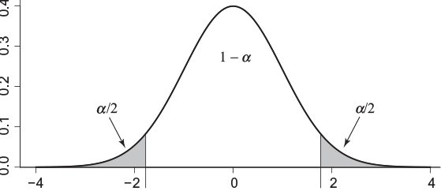

xc probs
1 6 0.3936972176
2 7 0.2560202395
3 8 0.1527625060
4 9 0.0839240170
5 10 0.0426209236
6 11 0.0200919635
7 12 0.0088274835
8 13 0.0036284927
9 14 0.0014003538
10 15 0.0005090983Hypothesis Testing
Lecture 7
Outline
- What is Hypothesis Testing?
- Elements of a Statistical Test
- What are p-values?
- Tests of Means
- Tests of Proportions
Hypothesis Testing
What is Hypothesis Testing?
Recall that confidence intervals are used to provide interval estimates for the population parameter. Often, we want to ask if the parameters behave a specific way.
Important
Examples of research questions we might ask are:
- Is the mean lifetime of a person using a newly developed drug the same as the lifetime with a standard drug?
- Is the mortality rate equal to 1%?
Hypothesis Testing Example
Consider the mean lifetime example. Suppose you perform the study and you find that the average lifetime for the newly developed drug is 35 years, while those with the standard drug had an average lifetime of 34 years.
Note
Could this difference of 1 year easily have occurred by chance even if the drugs work the same?
Important
We need to determine the probability of observing at least a 1-year difference in average lifetimes between the two groups under the assumption that the population means are equal.
- If this probability is high, then it’s not unlikely to observe a 1-year difference or more due to randomness.
- If this probability is low, then it’s unlikely to observe a 1-year difference or more due to randomness. There is evidence that Drug A works better than Drug B.
Elements of a Statistical Hypothesis Test
Statistical Hypothesis
In general, a statistical hypothesis is a statement about one or more parameters.
Warning
The statistical hypothesis is aligned with the research hypothesis, but not exactly the same. The research hypothesis addresses the problem stated for the study, but it does not need to provide a statemment about the parameters.
Types of Statistical Hypotheses
There are two types of statistical hypotheses: the null and alternative hypotheses.
Null Hypothesis
The null hypothesis, \(H_0\), is usually a specific statement about the parameters and is the statement against which we seek evidence.
Alternative Hypothesis
The alternative hypothesis, \(H_a\), is the statement that we conclude if we decide against the null hypothesis.
Null Hypotheses
The null hypothesis is often a statement about the parameters that amount to nothing or random chance.
Note
The null hypothesis could be that two treatments may yield the same mean, mortality rate remains the same, a coin is fair, or two random variables are not associated with each other.
Important
Consider the mean lifetime example. The null hypothesis corresponds to the scenario that both treatment and standard groups yield the same average lifetimes. The parameter of interest is then the difference in population average lifetime between the two groups. Explicitly,
\(H_0\): The average lifetime of the treatment group is equal to the average lifetime of the standard group.
\[ H_0: \mu_{trt} - \mu_{standard} = 0 \]
Alternative Hypothesis
The alternative hypothesis \(H_a\) is the statement that we conclude if we decide against the null hypothesis. Often, the null and alternative hypothesis should cover the entire parameter space.
Warning
However, there are times when the two hypotheses only cover a part of the parameter space depending on what convention is used for the null hypothesis.
Consider the mean lifetime example. If we were looking for evidence that the treatment performs better than the standard drug in increasing lifetimes, then that would be our alternative hypothesis. Explicitly,
\(H_a:\) The population average lifetime of the treatment group is higher than the average lifetime of the treatment group.
\[ H_a: \mu_{trt} -\mu_{standard} >0 \]
The hypotheses can be expressed by the following statements:
\[ H_0: \mu_{trt} - \mu_{standard} = 0 \]
\[ H_a: \mu_{trt} -\mu_{standard} >0 \]
These values do NOT span the entire parameter space \((-\infty,\infty)\). Rather it only considers one side. Hence, \(H_a\) is considered as a one-sided hypothesis.
Tip
There are references who would express the null hypothesis as \(\mu_{trt}-\mu_{standard} \leq 0\). The case \(\mu_{trt}-\mu_{standard} < 0\) means the treatment works worse than the placebo, implying the drug is not effective.
In this course, we will be as specific as possible when choosing \(H_0\) by only retaining the equality in the null hypothesis.
Example
Suppose we want to see whether there was evidence that the germination rate of seeds planted in a new soil mix formulation was higher than 70%.
What are the null and alternative hypotheses for this study?
\(H_0:\) The long-run germination rate of seeds planted in the new soil mix is equal to 70%
\[ H_0: \pi_{germination} = 0.70 \]
\(H_a:\) The long-run germination rate of seeds planted in the new soil mix is higher than 70%
\[ H_a: \pi_{germination} > 0.70 \]
Example
Suppose we want to disprove the claim that the average single-serving sugar content of a brand of dark chocolate is 3 grams.
What are the null and alternative hypotheses for this study?
\(H_0:\) The population average single-serving sugar content of a brand of dark chocolate is equal to 3 grams. OR The long-run average single-serving sugar content of a brand of dark chocolate is equal to 3 grams.
\[ H_0: \mu = 3 \]
\(H_a:\) The population average single-serving sugar content of a brand of dark chocolate is NOT equal to 3 grams. OR The long-run average single-serving sugar content of a brand of dark chocolate is NOT equal to 3 grams.
\[ H_a: \mu \neq 3 \]
Exercise
Consider the following studies:
Researchers were interested in determining whether the daily average amount of dog food in their local animal shelter was lower than 500 grams.
Suppose a design company created two designs (A and B) for the website of a new community clinic. The clinic administrators wanted to test whether there was a difference in proportion of site visitors who preferred each design.
What are the parameters of interest? What are the null and alternative hypotheses for these studies?
Parameter of interest: Long-run daily average amount of dog food \(H_0:\) The long-run daily average amount of dog food is equal to 500 grams. \(H_a:\) The long-run daily average amount of dog food is less than 500 grams.
\[ H_0: \mu = 500; H_a: \mu < 500 \]
\(H_0:\) There is no difference in proportion of site visitors who preferred Designs A and B. \(H_a:\) There is a difference in proportion of site visitors who preferred Designs A and B.
\[ H_0: \pi_A - \pi_B = 0; H_a: \pi_A-\pi_B \neq 0 \]
Hypothesis Testing: Decisions
The main idea behind hypothesis testing is to assume the null hypothesis is true until we get evidence that it is false.
Note
How do we get evidence that \(H_0\) is false? If the probability of obtaining the measured statistic (or more extreme values) assuming the null hypothesis is low, then this is evidence against the null hypothesis.
How low should this probability be?
Important
Once we’ve established this threshold, we need to make a decision.
- Reject \(H_0\)
- Do Not Reject \(H_0\) (Note: Failing to Reject \(H_0\) is not the same as accepting \(H_0\)).
Error Types and Significance Level
There is no error when the null hypothesis is rejected when it is false and when the null hypothesis is not rejected when it is true. However, the following cases are errors:
Type I error
A Type I error occurs when the null hypothesis is rejected when it is true.
Type II error
A Type II error occurs when the null hypothesis is not rejected when it is false.

Type I errors cannot be avoided due to the randomness of the process. The standard approach in hypothesis testing is to determine the cutoff point for our decision so that the probability of making a Type I error is some small predetermined number. This number is referred to as the significance level, \(\alpha\). Formally,
\[ \alpha = P(Reject~H_0|True~H_0) = P(Type~I~Error) \]
The most common value used for the significance level is \(\alpha = 0.05\).
Hypothesis Testing: Terminology
Test Statistic
The test statistic is some function of the data that is used to make the decision about whether to reject \(H_0\) or fail to reject \(H_0\).
Rejection Region
The rejection region, also called the critical region, is the set of values of the test statistic that lead us to reject \(H_0\).
Example: Basic Hypothesis Testing
Suppose that a hospital emergency department sees patients with influenza-like illness (ILI) at an average rate of six per day, except when there is a flu outbreak, in which case the rate is higher. Each day, the hospital records the number of ILI cases and tests whether there is evidence of an outbreak.
- What should the null and alternative hypotheses be for testing whether there is evidence of an outbreak?
- What is the rejection region corresponding to a significance level \(\alpha=0.05\).
- Do we have evidence of an outbreak when we receive a count of 12 cases for a single day?
Since we’re dealing with counts, we will use the Poisson distribution to describe the distribution of the number of cases. The hypothesis should be related to the rate parameter \(\lambda\).
\[ H_0: \lambda=6; H_a: \lambda > 6 \] where \(\lambda\) is the average daily count of ILI cases. To find the rejection region, we need to find the critical value \(x_c\) such that \(P(X \geq x_c) <= 0.05\) (choose the value with the highest probability to fit this criteria).
The data frame shows that when \(x_c=10\), \(P(X \geq 10) = 0.0426\), which is lower than 0.05. This means the rejection/critical region is \(X\geq 10\). If we get at least 10 cases, we have evidence of an outbreak. If we get less than 10 cases, we have no evidence of an outbreak.
Power
Power is the probability of rejecting the null hypothesis when the null hypothesis is false.
Important
The concept of power is closely related to sample size selection. In hypothesis testing, the sample size is determined so that the power at a fixed value of the alternative hypothesis is equal to a predetermined value or based on a set effect size.
p-values
Important
The p-value is the probability of getting a test statistic as extreme or more extreme than what was actually observed given that \(H_0\) is true. “More extreme” refers to getting a test statistic further away from the cutoff point that determines the rejection region.
The smaller p-value, the stronger the evidence against the null hypothesis \(H_0\).
Important
p-values are also often used for hypothesis testing to decide whether to reject \(H_0\) or not. A common rule is to reject the null hypothesis when the p-value is less than the significance level \(\alpha\), and fail to reject otherwise.
An alternative definition of the p-value is that the p-value is the smallest value of \(\alpha\) that leads to the rejection of the null hypothesis.
Example: p-values
Suppose that a hospital emergency department sees patients with influenza-like illness (ILI) at an average rate of six per day, except when there is a flu outbreak, in which case the rate is higher. Each day, the hospital records the number of ILI cases and tests whether there is evidence of an outbreak.
Recall that the hypotheses are given by
\[ H_0: \lambda = 6; H_a: \lambda > 6 \]
Calculate the p-value if the daily number of ILI cases was 12.
Assuming the null hypothesis is true, we assume \(\lambda =6\). We need to calculate the probability of getting a count as extreme or more extreme than 6, i.e. further away from 6. Therefore, we need to calculate the \(P(X \geq 12)\) using a Poisson distribution with \(\lambda=6\).
The resulting p-value is p=0.020092.
After seeing this result, you must believe one of two things.
- \(H_0\) is true and you observed an event with probability 0.0201
- \(H_0\) is false.
Hypothesis Testing: Approach
The approach for hypothesis testing can be described as follows:
- Determine the parameter of interest
- Determine the appropriate null and alternative hypotheses
- Choose a value for the significance level.
- Determine the rejection region.
- Compute the test statistic
- If the test statistic is in the rejection region, then reject the null hypothesis; otherwise, fail to reject the null hypothesis.
Tests Involving Means
Hypothesis Test: Single Mean, Known Variance
Suppose now that we observe a sample from a Gaussian distribution with known variance \(\sigma^2\). If we are interested in testing the null hypothesis \(H_0: \mu=\mu_0\), the alternative hypothesis can be one of the following:
- One-sided hypotheses: \(H_a: \mu < \mu_0\) or \(H_a: \mu > \mu_0\).
- Two-sided hypotheses: \(H_a: \mu \neq \mu_0\)
The problem dictates which alternative is appropriate.
Test Statistic
Recall that if \(\mu=\mu_0\), then the sample mean follows a Gaussian distribution with mean \(\mu\) and variance \(\sigma^2/n\). The corresponding standardized statistic \(z\) follows a standard Gaussian/normal distribution with mean 0 and standard deviation 1.
\[ z = \frac{\bar{X}-\mu_0}{\sigma/\sqrt{n}} \]
Rejection Region: One-Sided Tests
For one-sided tests with a significance level \(\alpha\), the critical values depend on \(z_\alpha\) defined by \(P(Z < z_\alpha) = \alpha\).
Specifically, for \(H_a: \mu < \mu_0\), the rejection region is \(z < z_\alpha\). For \(H_a: \mu > \mu_0\), the rejection region is \(z > z_{1-\alpha}\). Since we typically choose a low value for \(\alpha\), we expect a negative value for \(z_\alpha\).
The p-value can be calculated by calculating the following probabilities:
- \(H_a: \mu < \mu_0 \to P(Z < z)\)
- \(H_a: \mu > \mu_0 \to P(Z > z)\)
Rejection Region: Two-Sided Tests
Suppose the alternative hypothesis is two-sided (\(H_a: \mu \neq \mu_0\)). This means we have to consider the two cases in creating the rejection region, the sample mean could be above \(\mu_0\) or below \(\mu_0\).
For two-sided tests with a significance level \(\alpha\), we need to account for rejection regions on either side of the mean dictated by the null hypothesis. Since the standard normal distribution is symmetric about zero, the rejection region is defined by
\[ z < z_{\alpha/2}~OR~ z > z_{1-\alpha/2} \] ### p-value
The p-value can be calculated using the following equation:
\[ P(Z < -|z|) + P(Z>|z|) \] where \(|z|\) is the absolute value of \(z\).
Hypothesis Testing in R
We can use pnorm(z) to calculate the corresponding probabilities after calculating the z-statistic. The arguments/options for the pnorm function varies for the different alternative hypotheses.
Example
Suppose we have a sample of BMI levels for 200 adults. We assume the population BMI levels are normally distributed with mean \(\mu\) and a standard deviation of 5.0.
Suppose the sample mean of the 200 adults was \(\bar{x}=22.9\). Test whether the population BMI is equal to 23.5 against the alternative that it is not 23.5. Use a significance level \(\alpha=0.05\)
The parameter of interest is the population average BMI. The null and alternative hypotheses are as follows:
\[ H_0: \mu = 23.5; H_a: \mu \neq 23.5 \]
We first calculate the z-score, i.e. the standardized statistic
xbar <- 22.9
mu_null <- 23.5
stdev <- 5
sampsize <- 200
z <- (xbar-mu_null)/(stdev/sqrt(sampsize))
z[1] -1.697056To calculate the p-value, we use pnorm. We can use abs(z) to get the absolute value of z.
The p-value is 0.09. The p-value is higher than the significance level, which means we fail to reject the null hypothesis.
To calculate the rejection region, we need $ z < z_{/2}OR z > z_{1-/2}$.
The critical regions are then calculated as:
The rejection region is then z < -1.959964 OR z > 1.959964Since z=-1.6970563 is not part of the rejection region, then we fail to reject \(H_0\). We have insufficient evidence that the population BMI is not equal to 23.5.
Note
From here on out, we will use p-values to inform our decision about the null hypothesis. Even though we are using p-values for hypothesis testing, we must consider the fact that rejection regions and p-values are inherently addressing different concepts.
Exercise
The scores of the Wechsler Adult Intelligence Scale are normally distributed with a standard deviation of 15.
Suppose an organization claims that the average IQ of their members are above 131. A random sample of 40 members had an average Wechsler IQ Score of 133.5. Use hypothesis testing to test the organization’s claim. Assume the sample size is negligible compared to the total membership of the organization. Use a significant level \(\alpha = 0.05\).
The parameter of interest \(\mu\) is the population average IQ of the organization. Our hypotheses are:
\[ H_0: \mu = 131; H_a: \mu > 131 \]
Calculating our test statistic \(z\),
xbar <- 133.5
mu_null <- 131
stdev <- 15
sampsize <- 40
z <- (xbar-mu_null)/(stdev/sqrt(sampsize))
z[1] 1.054093The resulting p-value for this one-sided test is: \(P(Z > z)\).
The resulting p-value 0.15 is greater than the significance level of 0.05. Hence, we fail to reject the null hypothesis. We have insufficient evidence that the population average Wechsler IQ scores of the organization is above 131.
Hypothesis Test: Single Mean, Unknown Variance
When the population variance is unknown, we can use the \(t-distribution\) to define our test statistic.
Note
Recall Chapter 6: We can substitute the sample variance for the population variance and use the t-distribution instead of the standard normal distribution to account for the additional variability due to the variance estimation.
If we are interested in testing the null hypothesis \(H_0: \mu=\mu_0\), the alternative hypothesis can be one of the following:
- One-sided hypotheses: \(H_a: \mu < \mu_0\) or \(H_a: \mu > \mu_0\).
- Two-sided hypotheses: \(H_a: \mu \neq \mu_0\)
The problem dictates which alternative is appropriate.
Test Statistic
Recall that if \(\mu=\mu_0\) and the sample has a mean \(\bar{x}\), variance \(s\), and size \(n\), then the following statistic, \(t\), follows a t-distribution.
\[ t = \frac{\bar{X}-\mu_0}{s/\sqrt{n}} \]
The statistic \(t\) follows a t-distribution with \(df=n-1\) degrees of freedom.
Hypothesis Test: R
The test for a single mean and unknown variance is also known as the one-sample t-test. Here are the different ways to implement this test in R.
If we are given the mean, sample size, and standard deviation/variance, we can calculate the t-statistic manually like we did for the z-statistic for the case of known variance. We use the pt() function to calculate the p-value.
If we are provided a data set, we can use the t.test(vector,mu=mu_null,alternative) function in R.
Important
- The
vectorincludes the data that we want to use the t-test on. - The
mu_nullplaceholder is the mean according to the null hypothesis. alternativecan be"less"or"greater"for one-sided tests andtwo.sidedfor two-sided tests.
Example: Statistics
Suppose the recommendation for boys of a certain age is to consume at least 1,200 calories per day. A dietary recall measure revealed that the daily caloric intake for a random sample of 30 boys from the school district who receive free lunches is 1100 and a standard deviation of 200 calories.
Do we have sufficient evidence that the true mean daily caloric intake for boys who receive free lunches from the school district is lower than the recommended amount? Use a significance level of 0.05.
The parameter of interest is the true mean daily caloric intake for boys who receive free lunches from the school district. The hypotheses are:
\[ H_0: \mu = 1200; H_a: \mu < 1200 \]
The summary statistics are provided, hence we need to calculate the t-statistic manually.
xbar <- 1100
mu_null <- 1200
sdsamp <- 200
sampsize <- 30
t<- (xbar-mu_null)/(sdsamp/sqrt(sampsize))
t[1] -2.738613The t-statistic is -2.739. To calculate the p-value,
The p-value is 0.01, which is less than \(\alpha\). We reject the null hypothesis and conclude that there is sufficient evidence that the true mean daily caloric intake for boys who receive free lunches from the school district is lower than the recommended amount of 1,200 calories.
Example: Data Set
The data set Salaries in the package carData includes the The 2008-09 nine-month academic salary for Assistant Professors, Associate Professors and Professors in a college in the U.S.
Using the following code, we can isolate the salaries of the Assistant Professors.
Do we have sufficient evidence that the average salary of the Assistant Professors are above $ 75,000? Use a significance level of 0.01.
The parameter of interest is the true average salary of the Assistant Professors in a college in the U.S. The hypotheses are:
\[ H_0: \mu=75,000; H_a: \mu > 75,000 \]
We can use the t.test() function to implement the one-sample t-test.
One Sample t-test
data: Salaries$salary
t = 25.462, df = 396, p-value < 2.2e-16
alternative hypothesis: true mean is greater than 75000
95 percent confidence interval:
111200.1 Inf
sample estimates:
mean of x
113706.5 The test statistic is 25.462 with degrees of freedom df= 396. The p-value is <2.2e-16 which translates to a value lower than \(2.2 \times 10^{-16}\). This is definitely lower than the significance level of 0.01, hence we reject the null hypothesis. We have sufficient evidence to support the claim that the average salary of the Assistant Professors are above $ 75,000.
Exercise
Consider the data set SleepHealthData.csv.
Test the hypothesis that the average sleep duration for the population this sample represents is not equal to 7.5 hours. Use a significance level of 0.05.
The parameter of interest is the population average sleep duration. The hypotheses are:
\[ H_0: \mu=7; H_a: \mu \neq 7 \]
One Sample t-test
data: sleep$sleep_duration
t = 3.2104, df = 373, p-value = 0.00144
alternative hypothesis: true mean is not equal to 7
95 percent confidence interval:
7.051185 7.212986
sample estimates:
mean of x
7.132086 The test statistic is 3.2104 with degrees of freedom df= 373. The p-value is 0.0014. This is definitely lower than the significance level of 0.05, hence we reject the null hypothesis. We have sufficient evidence that the population average sleep duration is not equal to 7.
Hypothesis Test: Difference of Two Means (Independent Groups)
Often, we are interested in comparing two independent groups.
Note
Recall Chapters 5 and 6: To compare independent groups using a continuous variable response, we investigate the difference between the two groups. Examples of independent group comparisons include treatment vs. placebo, Location 1 vs. Location 2, Male vs. Female, Low vs. High SES.
We are interested in testing the null hypothesis \(H_0: \mu_1-\mu_2=\delta\). Most often, we use the null hypothesis of equality where \(\delta=0\). The alternative hypothesis can be one of the following:
- One-sided hypotheses: \(H_a: \mu_1-\mu_2 < \delta\) or \(H_a: \mu_1-\mu_2 > \delta\).
- Two-sided hypotheses: \(H_a: \mu_1-\mu_2 \neq \delta\)
The problem dictates which alternative is appropriate as well as the value of \(\delta\) (typically \(\delta=0\)).
Important
The test comparing means of two independent groups is often referred to as the two-sample t-test.
Test Statistic: Equal/Unequal Variances
The population variances are typically unknown, hence we use the t-distribution for our test statistic.
Warning
Recall Chapter 6: Since we will be estimating the population variances with sample variances, it is important to note whether we are assuming equal or unequal population variances in defining the t-distribution for our test statistic.
Test Statistic: Equal Variances
Recall Chapter 6: or samples from two independent populations with equal population variances, we use a pooled variance estimate, \(s_p^2\), for the equal population variances.
\[ s_p^2 = \frac{(n_1-1)s_1^2 + (n_2-1)s_2^2}{n_1 + n_2 - 2} \]
The t-statistic can then be calculated as
\[ t = \frac{(\bar{x}_1-\bar{x}_2) - (\mu_1-\mu_2)}{\sqrt{s_p^2\left(\frac{1}{n_1} + \frac{1}{n_2}\right)}} \]
where \(\bar{x}_1\) and \(\bar{x}_2\) are the respective sample means from Groups 1 and 2, \(s_p^2\) is the pooled variance, \(n_1\) and \(n_2\) are the respective sample sizes from Groups 1 and 2. The t-statistic follows a t-distribution with degrees of freedom \(df=n_1 + n_2 - 2\).
Test Statistic: Unequal Variances
Recall Chapter 6: For samples from two independent populations with unequal population variances, we use tje Welch-Satterthwaite procedure to construct this confidence interval such that the \(100(1-\alpha)\)% confidence interval is given by:
\[ t=\frac{(\bar{x}_1-\bar{x}_2) - (\mu_1-\mu_2)}{\sqrt{\left(\frac{s_1^2}{n_1} + \frac{s_2^2}{n_2}\right)}} \]
where the degrees of freedom is provided by the Satterthwaite approximation
\[ df = \frac{(s_1^2/n_1 + s_2^2/n_2)^2}{\left(\frac{s_1^2}{n_1}\right)^2/(n_1-1) + \left(\frac{s_2^2}{n_2}\right)^2/(n_2-1)} \]
Hypothesis Testing: R
The function t.test() can be used to implement a two-sample t-test. There are multiple ways to express the t-test using this function in R.
Suppose your data is assigned to the data frame df and the measurements from the samples you want to compare are in different columns: col1 and col2. Suppose you have a null hypothesis of equality, have a two-sided alternative, and assume equal population variances. Then the t-test function can be coded as:
Suppose your data is assigned to the data frame df, the response measurements from the samples are in one column response, and the groups are defined by a variable group. Suppose you have a null hypothesis of equality, have a two-sided alternative, and assume unequal population variances. We have to use the formula syntax in defining the groups. The t-test function can be coded as:
Important
If the grouping variable is NOT a factor, the groups in the parameter of interest \(\mu_1-\mu_2\) will be assigned in alphabetical order. If the grouping variable is a factor, it will follow the order set in the factor.
Example
Consider the sleep health data set from SleepHealthData.csv.
Perform a hypothesis test to determine if there is any statistically discernible difference between the average sleep duration of males and females. Assume equal variances and a significance level of 0.05.
The parameter of interest is the true difference in average sleep duration of males and females (\(\mu_f-\mu_m\)). The hypotheses should be:
\[ H_0: \mu_f - \mu_m = 0; H_a: \mu_f - \mu_m \neq 0 \] The alternative is two-sided because we did not specify a direction of the difference between the two groups.
The groups are defined by the variable gender and the response variable is defined by the variable sleep_duration. The t-test can be implemented using the following code:
# Set working directory where the Sleep Health Data is saved.
sleep <- read.csv("SleepHealthData.csv")
ttest <- t.test(sleep_duration~gender,
data=sleep,
mu=0,
alternative="two.sided",
var.equal=TRUE)
ttest
Two Sample t-test
data: sleep_duration by gender
t = 2.3624, df = 372, p-value = 0.01867
alternative hypothesis: true difference in means between group Female and group Male is not equal to 0
95 percent confidence interval:
0.03239537 0.35404821
sample estimates:
mean in group Female mean in group Male
7.229730 7.036508 The p-value is 0.0187, which is lower than the set significance level of 0.05. We reject the null hypothesis. We have sufficient evidence that the true difference in average sleep duration between females and males is non-zero.
Example
The data set hflashes_subset.csv contains the baseline FSH measurements of 50 randomly sampled participants the following groups: those who reported hot flashes and those who did not.
Is there a discernible difference between the average FSH levels of those who reported hot flashes and those who did not? Use a significance level of 0.01. Assume unequal population variances.
The parameter of interest is the true difference in average FSH levels between those who experienced hot flashes and who did not. The hypotheses should be:
\[ H_0: \mu_h - \mu_n = 0; H_a: \mu_h - \mu_n \neq 0 \] The alternative is two-sided because we did not specify a direction of the difference between the two groups.
The groups are defined by the columns: YesHotFlash and NoHotFlash. The t-test can be implemented using the following code:
# Set working directory where the Sleep Health Data is saved.
fsh <- read.csv("hflashes_subset.csv")
ttest <- t.test(x=fsh$YesHotFlash,
y=fsh$NoHotFlash,
mu=0,
alternative="two.sided",
var.equal=FALSE)
ttest
Welch Two Sample t-test
data: fsh$YesHotFlash and fsh$NoHotFlash
t = 0.040448, df = 97.999, p-value = 0.9678
alternative hypothesis: true difference in means is not equal to 0
95 percent confidence interval:
-2.085887 2.172687
sample estimates:
mean of x mean of y
9.6598 9.6164 The p-value is 0.9678, which is higher than the set significance level of 0.01. We fail to reject the null hypothesis. We have insufficient evidence that the true difference in average fsh levels between those who experience hot flashes and who did not is non-zero.
Exercise
Consider the sleep health data set from SleepHealthData.csv.
Perform a hypothesis test to determine if the average heart rate of males is higher than that of females. Assume equal variances and a significance level of 0.05.
Warning
The group levels will follow alphabetical order, which means group 1 will be set as the female group.
The parameter of interest is the true difference in average heart rate between females and males (\(\mu_f-\mu_m\)). The hypotheses should be:
\[ H_0: \mu_f - \mu_m = 0; H_a: \mu_f - \mu_m < 0 \] The alternative is one-sided, “less”, because we specified the direction where males have a higher average heart rate than females.
The groups are defined by the variable gender and the response variable is defined by the variable heart_rate. The t-test can be implemented using the following code:
# Set working directory where the Sleep Health Data is saved.
sleep <- read.csv("SleepHealthData.csv") # if not already loaded
ttest <- t.test(heart_rate~gender,
data=sleep,
mu=0,
alternative="less",
var.equal=TRUE)
ttest
Two Sample t-test
data: heart_rate by gender
t = -4.2897, df = 372, p-value = 1.142e-05
alternative hypothesis: true difference in means between group Female and group Male is less than 0
95 percent confidence interval:
-Inf -1.104046
sample estimates:
mean in group Female mean in group Male
69.25946 71.05291 The p-value is 0.000011, which is lower than the set significance level of 0.05. We reject the null hypothesis. We have sufficient evidence that the true difference in average heart rate between females and males is less than zero. Or we can say: We have sufficient evidence that the average heart rate of males is higher than that of females in the population this sample represents.
Hypothesis Testing: Paired Means
There are times when two sets of measurements cannot be treated as independent groups. Consider the following example: The table below shows the pre- and post-test scores of five students after going through a newly developed statistics course.
| Student ID | Pre-Test | Post-Test |
|---|---|---|
| 1 | 75 | 77 |
| 2 | 62 | 64 |
| 3 | 51 | 53 |
| 4 | 55 | 57 |
| 5 | 97 | 99 |
Note
There is a lot of variability among the pre-test and post-test scores. However, the paired differences show an increase of two points for all students, showing no variability between students.
Paired Means
For dependent means, the parameter of interest is the true average of the paired differences which we will refer to as \(mu_d\).
Note
Paired measurements can come from repeated measures from the same unit (Ex: pre- vs. post-test for a single student) or from matched pairs (two individuals with the same demographic and genetic background going through a randomized controlled trial).
We are interested in testing the null hypothesis \(H_0: \mu_d=d_0\). Most often, we use the null hypothesis of equality where \(d_0=0\). The alternative hypothesis can be one of the following:
- One-sided hypotheses: \(H_a: \mu_d< d_0\) or \(H_a: \mu_d> d_0\).
- Two-sided hypotheses: \(H_a: \mu_d \neq d_0\)
The problem dictates which alternative is appropriate as well as the value of \(d_0\) (typically \(d_0=0\) for the null hypothesis of equality).
Test Statistic
Recall that we do not know the population variance of the paired differences, hence we need to use the t-distribution. if \(\mu_d=d_0\) and the sample has a mean paired difference \(\bar{x}_d\), variance \(s_d\), and number of paired observations \(n\), then the following statistic, \(t\), follows a t-distribution.
\[ t = \frac{\bar{x}_d-d_0}{s_d/\sqrt{n}} \]
The statistic \(t\) follows a t-distribution with \(df=n-1\) degrees of freedom.
Hypothesis Test: R
The test for paired differences is also known as the paired t-test. Here are the different ways to implement this test in R.
If we are given the mean, sample size, and standard deviation/variance, we can calculate the t-statistic manually like we did for the z-statistic for the case of known variance. We use the pt() function to calculate the p-value.
Suppose your data is assigned to the data frame df and the measurements from the samples you want to compare are in different columns: col1 and col2. Suppose you have a null hypothesis \(H_0: \mu_d=d_0\), have a two-sided alternative, and assume equal population variances. Then the t-test function can be coded as:
Warning
The formula syntax will not work for paired data. The paired variables should be coded as two separate columns.
Example
The data set anorexia from the package MASS contains weight change data for young female anorexia patients.
Rows: 72
Columns: 3
$ Treat <fct> Cont, Cont, Cont, Cont, Cont, Cont, Cont, Cont, Cont, Cont, Con…
$ Prewt <dbl> 80.7, 89.4, 91.8, 74.0, 78.1, 88.3, 87.3, 75.1, 80.6, 78.4, 77.…
$ Postwt <dbl> 80.2, 80.1, 86.4, 86.3, 76.1, 78.1, 75.1, 86.7, 73.5, 84.6, 77.…Perform a paired t-test to test whether there is a difference between the preweight prewt and postwt for all patients, disregarding the type of treatment. Use a significance level of 0.05.
The parameter of interest is the average paired difference in weight before and after treatment, \(\mu_d\). The hypotheses are:
\[
H_0: \mu_d = 0; H_a: \mu_d \neq 0
\] We can use t.test() to perform the t-test.
ttest <- t.test(x=anorexia$Postwt,
y=anorexia$Prewt,
alternative="two.sided",
mu=0,
paired=TRUE
)
ttest
Paired t-test
data: anorexia$Postwt and anorexia$Prewt
t = 2.9376, df = 71, p-value = 0.004458
alternative hypothesis: true mean difference is not equal to 0
95 percent confidence interval:
0.8878354 4.6399424
sample estimates:
mean difference
2.763889 The p-value is 0.0045, which is lower than the set significance level of 0.05. We reject the null hypothesis. We have sufficient evidence that the true average paired difference in weight pre- and post-treatment is not zero.
Exercise
The data set ChickWeight.csv contains 10 paired data corresponding to weights of chicks in ounces, two from 10 families, reared in confinement or on open range.
# Remember to save ChickWeight to your working directory
chick <- read.csv("ChickWeight.csv")
glimpse(chick)Rows: 10
Columns: 3
$ Chicks <chr> "C01", "C02", "C03", "C04", "C05", "C06", "C07", "C08", "C…
$ Confinement <int> 9, 17, 14, 13, 15, 10, 11, 13, 13, 15
$ OpenRange <int> 8, 15, 11, 11, 9, 12, 11, 10, 9, 14Suppose the farmer claims that the difference in weights between chicks raised in confinement and those who were raised in open range is higher than 1.5 ounces. Perform a hypothesis test that tests this claim. Use a significance level of 0.05.
Note that the chicks were paired up with another chick from the same family, hence we need to use a paired t-test. The parameter of interest is the true average paired difference in weights of chicks raised in confinement and open range. The hypotheses can be written as:
\[
H_0: \mu_d = 1.5; H_a: \mu_d > 1.5
\] Define the difference as Confinement-OpenRange. We can now implement the t-test using the t.test() function.
ttest <- t.test(x=chick$Confinement,
y=chick$OpenRange,
alternative="greater",
mu=1.5,
paired=TRUE
)
ttest
Paired t-test
data: chick$Confinement and chick$OpenRange
t = 0.7151, df = 9, p-value = 0.2463
alternative hypothesis: true mean difference is greater than 1.5
95 percent confidence interval:
0.7182766 Inf
sample estimates:
mean difference
2 The p-value is 0.2463, which is higher than the set significance level of 0.05. We fail reject the null hypothesis. We have insufficient evidence that the true average paired difference in weight of chicks raised in confinement and open range is higher than 1.5 ounces.
Hypothesis Test: Single Population Proportion
We can also perform hypothesis tests for a single proportion, \(\pi\).
We are interested in testing the null hypothesis \(H_0: \pi=\pi_0\). The alternative hypothesis can be one of the following:
- One-sided hypotheses: \(H_a: \pi>\pi_0\) or \(H_a: \pi<\pi_0\).
- Two-sided hypotheses: \(H_a: \pi \neq \pi_0\)
Test Statistic
Note
Recall Chapter 6: When dealing with inference related to proportions, the reliability coefficient we used was derived from the standard normal distribution. In Chapter 7, we will use the standard normal distribution to describe our test statistic: the z-statistic.
For a sample proportion \(\hat{p}\) and sample size \(n\), the z-statistic can be expressed as \[ z = \frac{\hat{p}-\pi_0}{\sqrt{\frac{\pi_0(1-\pi_0)}{n}}}. \]
Hypothesis Testing: R
We can use pnorm(z) to calculate the corresponding probabilities after calculating the z-statistic. The arguments/options for the pnorm function varies for the different alternative hypotheses. Similar to the hypothesis test for a single mean with known variance, the p-values can be calculated as:
- \(H_a: \pi < \pi_0 \to P(Z < z)\)
- \(H_a: \pi > \pi_0 \to P(Z > z)\)
- \(H_a: \pi \neq \pi_0 \to P(Z < -|z|) + P(Z>|z|)\)
Example
Suppose the health department claims that the vaccination rate for shingles in older adults in the population is above 50%. When a random sample of elderly adults were asked about their vaccination status, 357 out of 700 reported to be vaccinated against shingles.
Perform a hypothesis test to test the claim of the health department. Use a significance level of 0.01.
The parameter of interest is the true proportion of elderly adults vaccinated against shingles. The hypotheses are:
\[ H_0: \pi = 0.5; H_a: \pi > 0.5 \]
Our sample proportion is 357/700 with a sample size of 700. We can now calculate the z-statistic
sampsize <- 700
phat <- 357/sampsize
pi_null <- 0.5
se <- sqrt(pi_null*(1-pi_null)/sampsize)
z <- (phat-pi_null)/se
z[1] 0.5291503The corresponding p-value should be calculated as P(Z > 0.5291503)
The resulting p-value is 0.2983506, which is higher than the significance level of 0.01. We fail to reject the null hypothesis. We have insufficient evidence to claim that the true percentage of elderly adults vaccinated against shingles in this population is higher than 50%.
Exercise
Consider the sleep health data SleepHealthData.csv
Suppose the claim is that the prevalence rate of sleep apnea in this population is lower than 25%. Do we have evidence to support this claim? Use a significance level of 0.10.
The parameter of interest is the true proportion of the population who have sleep apnea. The hypotheses are:
\[ H_0: \pi = 0.25; H_a: \pi < 0.25 \]
We can calculate the sample proportion using the frequency table provided by freq() from the summarytools package.
Frequencies
sleep$_disorder
Type: Character
Freq % Valid % Valid Cum. % Total % Total Cum.
----------------- ------ --------- -------------- --------- --------------
Insomnia 77 20.59 20.59 20.59 20.59
None 219 58.56 79.14 58.56 79.14
Sleep Apnea 78 20.86 100.00 20.86 100.00
<NA> 0 0.00 100.00
Total 374 100.00 100.00 100.00 100.00We can now calculate the z-statistic
sampsize <- 374
phat <- 78/sampsize
pi_null <- 0.25
se <- sqrt(pi_null*(1-pi_null)/sampsize)
z <- (phat-pi_null)/se
z[1] -1.850952The corresponding p-value should be calculated as P(Z < -1.8509524)
The resulting p-value is 0.0320882, which is lower than the significance level of 0.10. We reject the null hypothesis. We have sufficient evidence to claim that the true prevalence rate of sleep apnea in this population is lower than 25%.
Hypothesis Test: Difference of Two Population Proportions
We can also expand the hypothesis tests to compare proportions from two populations using their difference, \(\pi_1 - \pi_2\).
We are interested in testing the null hypothesis of equality \(H_0: \pi_1 - \pi_2=0\). The alternative hypothesis can be one of the following:
- One-sided hypotheses: \(H_a: \pi_1 - \pi_2>0\) or \(H_a: \pi_1 - \pi_2<0\).
- Two-sided hypotheses: \(H_a: \pi_1 - \pi_2\neq 0\)
Test Statistic
When testing the null hypothesis \(H_0: \pi_1 - \pi_2=0\), the standard error used in calculating the z-statistic involves the pooled proportion \(\bar{p}\), given by:
\[ \bar{p} = \frac{x_1 + x_2}{n_1 + n_2} = \frac{n_1p_1 + n_2x_2}{n_1 + n_2} \]
where the number of successes are \(x_1\) and \(x_2\), sample proportions are \(\hat{p}_1\) and \(\hat{p}_2\), and sample sizes are \(n_1\) and \(n_2\). The z-statistic can be calculated using the following equation:
\[ z = \frac{\hat{p}_1 -\hat{p}_2}{\sqrt{\bar{p}(1-\bar{p})\left(\frac{1}{n_1} + \frac{1}{n_2}\right)}}. \]
Example
Consider the hotflash data set hflashes.csv. The variable f1a has a value of 1 if the participant currently smokes and 0 otherwise.
Rows: 375
Columns: 14
$ pt <int> 3, 6, 7, 8, 9, 10, 11, 12, 13, 14, 15, 16, 17, 19, 20, 23, 24…
$ ageg <int> 2, 3, 1, 1, 2, 3, 2, 2, 2, 3, 2, 1, 1, 1, 1, 3, 2, 1, 1, 1, 2…
$ aagrp <int> 0, 0, 0, 0, 0, 0, 0, 1, 0, 0, 1, 1, 0, 1, 1, 0, 0, 0, 0, 1, 0…
$ edu <int> 1, 1, 1, 1, 1, 1, 1, 1, 1, 1, 1, 0, 1, 1, 1, 1, 0, 1, 1, 1, 1…
$ d1 <int> 0, 0, 0, 1, 0, 0, 0, 0, 1, 0, 1, 1, 1, 1, 0, 0, 0, 1, 0, 1, 0…
$ f1a <int> 0, 0, 1, 0, 1, 0, 0, 1, 1, 0, 0, 1, 0, 0, 1, 1, 1, 0, 0, 0, 1…
$ pcs12 <dbl> 56.80537, 59.18338, 57.73952, 55.83575, 55.89324, NA, 55.5009…
$ hotflash <int> 0, 0, 0, 1, 0, 1, 0, 1, 1, 0, 1, 0, 0, 0, 0, 0, 0, 1, 0, 1, 0…
$ bmi30 <int> 0, 0, 0, 0, 0, 0, 1, 1, 0, 0, 1, 1, 0, 0, 0, 0, 0, 0, 0, 1, 0…
$ estra <dbl> 106.710, 31.250, 13.410, 10.640, 24.060, 37.305, 26.320, 24.1…
$ fsh <dbl> 3.005, 11.195, 14.545, 5.530, 9.780, 10.290, 7.960, 4.775, 7.…
$ lh <dbl> 2.980, 5.760, 5.595, 2.260, 2.600, 3.395, 3.570, 2.095, 3.660…
$ testo <dbl> 7.680, 11.930, 24.375, 8.280, 4.050, 8.275, 15.995, 12.340, 1…
$ dheas <dbl> 61.225, 104.920, 117.450, 36.850, 11.165, 100.360, 76.780, 83…Does this study provide sufficient evidence for us to conclude that participants who smoke have a higher proportion of participants who experience hot flashes compared to those who do not smoke? Use \(\alpha=0.05\).
The parameter of interest is the true difference in proportion of participants who experience hot flashes between current and nonsmokers.. The hypotheses are:
\[
H_0: \pi_s-\pi_n = 0; H_a: \pi_s-\pi_n > 0
\] Calculating the proportions would be slightly more complicated with two groups. We will use the filter(data,condition) function to separate the smokers and the non-smokers based on the f1a variable.
Frequencies
smokers$hotflash
Type: Integer
Freq % Valid % Valid Cum. % Total % Total Cum.
----------- ------ --------- -------------- --------- --------------
0 85 61.59 61.59 61.59 61.59
1 53 38.41 100.00 38.41 100.00
<NA> 0 0.00 100.00
Total 138 100.00 100.00 100.00 100.00Frequencies
nonsmokers$hotflash
Type: Integer
Freq % Valid % Valid Cum. % Total % Total Cum.
----------- ------ --------- -------------- --------- --------------
0 172 72.57 72.57 72.57 72.57
1 65 27.43 100.00 27.43 100.00
<NA> 0 0.00 100.00
Total 237 100.00 100.00 100.00 100.0053 out of 138 experienced hot flashes in the smokers group and 65 out 237 experienced hot flashes in the nonsmoker group. We can now calculate the pooled proportion and standard error.
We can now calculate the z-statistic
The corresponding p-value should be calculated as P(Z > 2.2080543)
The resulting p-value is 0.5054335, which is lower than the significance level of 0.05. We reject the null hypothesis. We have sufficient evidence to claim that the true difference in proportion of participants who experience hot flashes between smokers and non-smokers is greater than zero.
Exercise
Noonan syndrome is a genetic condition that can affect the heart, growth, blood clotting, and mental and physical development. The study contained 29 male and 44 female adults. One of the cutoff values used to assess stature was the third percentile of adult height. 11 of the males fell below the third percentile of adult male height, while 24 of the females fell below the third percentile of female adult height.
Does this study provide sufficient evidence for us to conclude that among subjects with Noonan syndrome, females are more likely than males to fall below the respective third percentile of adult height? Use \(\alpha=0.05\).
The parameter of interest is the true difference in proportion of subjects with Noonan syndrome who fall below the third percentile of adult height between males and females.. The hypotheses are:
\[ H_0: \pi_f-\pi_m = 0; H_a: \pi_f-\pi_m > 0 \]
We first calculate the pooled proportion used for the standard error. Note that the number of successes for females and males is 24 and 11, respectively.
We can now calculate the z-statistic
The corresponding p-value should be calculated as P(Z > 1.3904204)
The resulting p-value is 0.5327564, which is higher than the significance level of 0.05. We fail to reject the null hypothesis. We have insufficient evidence to claim that the true difference in proportion of subjects with Noonan syndrome who fall below the third percentile of adult height between males and females is greater than zero.
Lecture 7 - Back to home